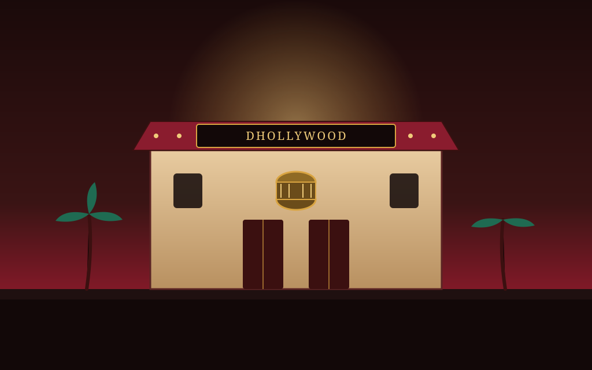

Santali Cinema Explorer
Explore the vibrant world of Santali cinema, celebrating indigenous tribal storytelling, deep-rooted folklore, music, and social identity across the Chota Nagpur plateau and eastern Indian belt.
Celebrating Tribal Storytelling & Cultural Roots
Santali cinema represents the creative heartbeat of the Santhal community, spoken across Jharkhand, West Bengal, Odisha, and Bihar. Grounded in oral traditions, folklore, and a profound harmony with nature, early Santali video films and cinematic ventures emerged to give voice to indigenous struggles, triumphs, and celebrations.
Driven by community passion, independent filmmakers utilize cinema as a powerful tool to preserve the Ol Chiki script, traditional dances, and community values, gradually establishing a distinct regional cinematic identity.
🎞️ At a Glance
- Cultural Regions: Jharkhand, Odisha, West Bengal, and Bihar.
- Primary Focus: Indigenous folklore, social customs, and community empowerment.
- Language Script: Ol Chiki script promotion and preservation.
- Growth Era: Rapid expansion through independent video productions and digital platforms.
Notable Films of Santali Cinema
Pioneering and acclaimed films that capture the essence of Santali life, art, and societal narratives.
Chet Re Chetan (2000s)
One of the early landmark Santali feature video films that established commercial viability and audience engagement.
Sagun Sarhul (2010)
A culturally resonant film celebrating the traditional Sarhul festival, community bonding, and reverence for nature.
Baha Binti (2015)
An acclaimed work focusing on indigenous ecological wisdom, rituals, and the preservation of sacred forests.
Disom Joot (2018)
A powerful social drama highlighting tribal unity, youth aspirations, and modern challenges.
🏆 Milestones & Honours
- Inclusion in National Platforms: Growing recognition of Santali language films at regional and national film festivals.
- Cultural Preservation Awards: Honors for keeping indigenous music, dance forms (Santhal dance), and folklore alive.
- Independent Acclaim: Grassroots film festivals celebrating tribal directors and actors.
Awards & Cultural Recognition
While operating largely outside traditional commercial studio networks, Santali cinema has garnered significant appreciation across eastern India. State cultural bodies and tribal welfare departments regularly honor filmmakers who dedicate their art to documenting Santhal history, traditional festivals, and community jurisprudence.
These acknowledgments provide crucial encouragement for young independent creators striving to bring indigenous storytelling onto wider screens.
Milestones of Santali Cinema
Tracing the evolution of Santali filmmaking from early video cassettes to digital streaming era.
The Video Era Beginnings
Independent creators start producing local video films and music albums in Santali, laying the foundation for regional cinema.
Cultural Festival Integration
Feature films focusing on tribal festivals like Sarhul and Baha gain popularity across rural and semi-urban communities.
Digital Renaissance
Online video platforms and social media empower independent Santali filmmakers to reach global diaspora audiences.
Plateaus, Reels & Tribal Heritage
Visual impressions capturing the landscape and artistic traditions behind Santali culture.



📚 References & Further Reading
- Wikipedia. Santali Cinema — Overview and Regional Development.
- Jharkhand Tribal Welfare Research Institute. Documentation of Indigenous Santhal Culture and Media.
- Eastern India Regional Film Archives. Growth of Tribal Language Cinema.